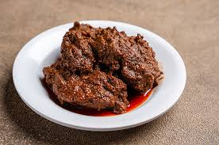

nasi goreng

Nasi goreng adalah makanan berupa nasi yang digoreng dan dicampur dalam minyak goreng, margarin, atau mentega. Biasanya ditambah dengan kecap manis, bawang merah, bawang putih, asam jawa, lada dan bahan lainnya; seperti telur, daging ayam, dan kerupuk. Ada pula nasi goreng jenis lain yang dibuat bersama dengan ikan asin yang juga populer di seluruh Indonesia.
sate padang
Sate padang adalah sebutan untuk tiga jenis varian sate di Sumatera Barat, yaitu Sate Padang, Sate Padang Panjang, dan Sate Pariaman. Namun karena adanya ekslusivitas istilah makanan, istilah sate Padang tidak digunakan di Sumatera Barat yang hanya merujuk pada sate daging, lidah, dan jeroan; sedangkan istilah ini hanya digunakan di luar Sumatera Barat.
rendang
Rendang (bahasa Minangkabau: randang; Jawi: رندڠ) adalah hidangan berbahan dasar daging yang dihasilkan dari proses memasak suhu rendah dalam waktu lama dengan menggunakan aneka rempah-rempah dan santan. Proses memasaknya memakan waktu berjam-jam (biasanya sekitar empat jam) hingga yang tinggal hanyalah potongan daging berwarna hitam pekat dan dedak. Dalam suhu ruangan, rendang dapat bertahan hingga berminggu-minggu. Rendang yang dimasak dalam waktu yang lebih singkat dan santannya belum mengering disebut kalio, berwarna cokelat terang keemasan.